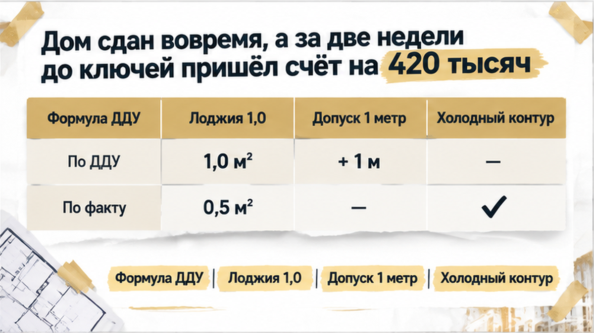
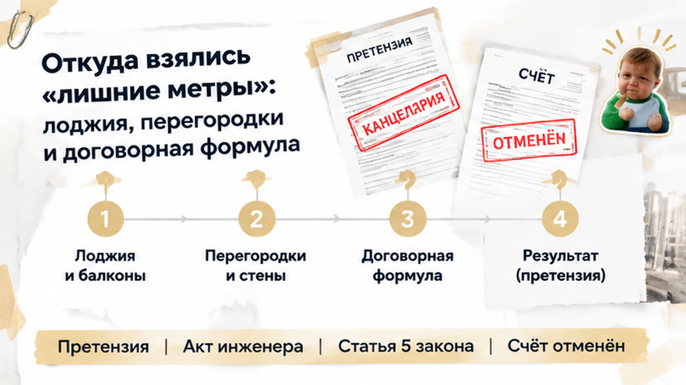
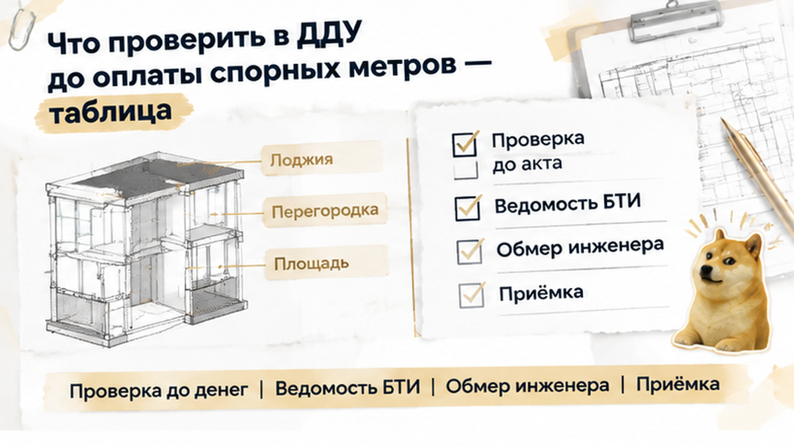

В Тюмени семье с двумя детьми выставили счёт на 420 тысяч рублей за «лишние метры» в новостройке — застройщик заморозил передачу ключей и отказал в выдаче квартиры до оплаты. Двухкомнатную квартиру брали в семейную ипотеку, дом ввели в эксплуатацию точно в срок, а «письмо счастья» прилетело за две недели до назначенной даты приёмки. По версии застройщика, квартира внезапно выросла на целых 3,2 квадратных метра. Свободных наличных у людей не оставалось: семейный бюджет рассчитали под чистовой ремонт, плитку и мебель. На кухонном столе рядом с ДДУ лёг счёт на почти полмиллиона рублей, превратив долгожданную радость от сдачи дома в холодный душ.
С вами Святослав Шакин, The Риэлтор, Тюмень. Веду сделки по новостройкам лично: от первой брони до подписания акта и проверки каждого сантиметра. Показываю изнанку тюменских ЖК и разбираю капканы застройщиков в Telegram и MAX — подпишитесь, чтобы защитить свои деньги до подписания бумаг.

Картина перед выдачей ключей выглядела образцово. Застройщик построил секцию без срыва сроков, во дворе постелили газон, а в мессенджере чат дольщиков уже обсуждал установку кондиционеров. Семья уже мысленно расставляла детские кровати и закупала отделочные материалы. Но ввод дома в эксплуатацию и передача ключей покупателю — это два разных юридических рубежа. Разрешение на ввод подтверждает общую строительную готовность здания перед городом, но не даёт права зайти в квартиру без передаточного акта.
Официальное уведомление застройщика производит на обычного покупателя парализующий эффект. На бланке стоят синие печати, подписи руководства и точные ссылки на результаты первичной технической инвентаризации. Большинство тюменцев в такой момент думают: «Раз большая строительная компания насчитала доплату, значит, инженеры всё перепроверили, спорить бесполезно». Однако официальный счёт застройщика фиксирует лишь его финансовые аппетиты, но сам по себе не доказывает правомерность расчёта.
Семье предложили перечислить 420 тысяч на обычный расчётный счёт компании — не на эскроу, где деньги защищены банком до регистрации, а напрямую застройщику. Ошибка здесь стоит слишком дорого: отдать последние сбережения, предназначенные для жизни с детьми, за воздух на чертеже. В новостройках Тюмени такие развилки происходят постоянно: мы уже разбирали, как семейную ипотеку одобрили, но цепочка до открытия эскроу сорвалась на финише. Семья решила не торопиться в кассу, а внимательно перечитать каждую букву договора участия в долевом строительстве.

Обычный человек видит в ДДУ только номер квартиры и общую цену. Риэлтор сразу открывает раздел о порядке изменения цены при расхождении площадей. В договоре этой семьи был зафиксирован ключевой пункт: взаимные перерасчёты производятся только в том случае, если фактическая площадь квартиры отличается от проектной более чем на 1 квадратный метр. Если отклонение укладывается в пределы одного метра — это допустимая строительная погрешность, за которую никто никому ничего не должен.
Откуда же тогда взялись шокирующие 3,2 метра превышения? Главная манипуляция застройщика спряталась в холодной застеклённой лоджии. Инженеры компании включили её площадь в расчёт с коэффициентом 1,0 — ровно так же, как если бы это была тёплая жилая комната. Обывателю внушают: «У вас же стоит остекление, значит, это полноценное помещение». Это грубое нарушение. По закону и правилам кадастрового учёта застеклённая лоджия считается с понижающим коэффициентом 0,5, то есть каждый её метр учитывается лишь наполовину.
Здесь важно понимать терминологию: согласно статье 15 Жилищного кодекса РФ, балконы и лоджии вообще не входят в общую площадь жилого помещения. В договорах долевого участия по 214-ФЗ используется понятие приведённой площади, где неотапливаемые помещения умножаются на понижающие коэффициенты: 0,5 для лоджий и 0,3 для балконов и террас. Застройщик же посчитал холодные квадратные метры по полной стоимости жилья, приписав семье сразу 1,8 несуществующих расчётных метра.
Остальные 1,4 метра разницы набежали из-за замеров перегородок без учёта штукатурного слоя и грубых ошибок при обмере санузлов и ниш. По статье 5 Федерального закона № 214-ФЗ цена может меняться строго в порядке, предусмотренном договором. Доверять расчётам менеджера в офисе продаж без независимой верификации — значит добровольно подарить застройщику сотни тысяч рублей.
Когда покупатели пришли в тюменский офис застройщика за разъяснениями, диалог быстро перешёл в ультимативную плоскость. Менеджер сухо отрезал: «Правила для всех одни. Пока платёжное поручение на 420 тысяч не появится в бухгалтерии, осмотра не будет, передаточный акт никто не подпишет, а ключи останутся в сейфе». Более того, семье пригрозили: если доплата не поступит в течение двух месяцев, застройщик в одностороннем порядке подпишет акт передачи, и долг передадут юристам для судебного взыскания с начислением неустоек.
«Но у нас нет свободных денег, мы рассчитывали на проектную стоимость!» — попытались возразить дольщики. «Берите потребительский кредит, иначе останетесь без квартиры», — последовал циничный ответ. Расчёт строится на элементарном психологическом давлении: семья живёт на съёмном жилье, платит ипотеку, дети ждут новоселья, и в панике люди часто соглашаются на кабальные кредиты, лишь бы не сорвать заветный переезд.
Однако шантаж ключами абсолютно законен только в глазах недобросовестного отдела продаж. По закону № 214-ФЗ односторонний акт передачи допускается исключительно в случае уклонения дольщика от приёмки объекта. Письменный аргументированный спор о достоверности расчёта цены и метража уклонением от приёмки не является. Мы подробно разбирали в деталях, как задержка сдачи и удержание ключей застройщиком бьют по правам дольщиков. Вместо слепого подчинения семья наняла независимого эксперта.
Для контрольного обмера пригласили аттестованного кадастрового инженера, состоящего в профильной СРО, с поверенным высокоточным лазерным дальномером. Эксперт выехал на объект до подписания любых актов, произвёл геометрические замеры каждого помещения по контрольным точкам, проверил параллельность стен и составил официальный технический план фактических обмеров.
Приборная проверка камня на камне не оставила от расчётов застройщика. Первым делом инженер пересчитал площадь застеклённой лоджии: применение законного коэффициента 0,5 вместо самовольной единицы застройщика моментально сняло 1,8 квадратного метра приписок. Холодное помещение вернулось к законным проектным параметрам.
Далее вскрылись огрехи замеров внутри самой квартиры. При замерах комнат строители не учли толщину проектного слоя штукатурки и ошибочно сняли мерки по черновым перегородкам санузла и гардеробной ниши, что искусственно раздуло площадь ещё на 0,6 кв. метра. В сухом остатке реальное фактическое превышение площади двухкомнатной квартиры составило всего 0,8 квадратного метра.
А теперь открываем пункт ДДУ: допустимая строительная погрешность — до 1 квадратного метра без взаиморасчётов сторон. Реальное расхождение в 0,8 метра полностью укладывалось в этот предел. Никакой прибавки в 3,2 метра не существовало в природе. Требование застройщика доплатить 420 000 рублей оказалось незаконным мыльным пузырём.
Имея на руках официальное заключение кадастрового инженера с синей печатью, семья составила аргументированную досудебную претензию. В документе по полочкам разложили правовую позицию: сослались на статью 5 закона № 214-ФЗ, требования Приказа Росреестра № П/0393 по коэффициентам лоджий и условие ДДУ о допустимом отклонении до 1 кв. метра. К претензии подкололи заверенные копии обмеров и свидетельства о поверке прибора.
Требование заявили недвусмысленно: аннулировать незаконный счёт на 420 000 рублей, прекратить блокировку передачи квартиры и выдать ключи по передаточному акту без дополнительных платежей. Претензию вручили под входящий номер в канцелярии тюменского застройщика с отметкой на втором экземпляре.
Реакция юристов застройщика была мгновенной. Доводить дело до суда с таким комплектом доказательств для компании означало гарантированное фиаско с наложением штрафа в 50% по закону о защите прав потребителей, возмещением расходов на экспертизу и компенсацией морального вреда. Через пять рабочих дней семье пришёл официальный ответ: застройщик признал «техническую ошибку при формировании первичной ведомости», счёт на 420 тысяч рублей был полностью аннулирован. Дольщики подписали передаточный акт без доплат и получили ключи от своей квартиры.
Застройщик требует 420 тысяч за лишние метры перед ключами — вы бы пошли на независимый обмер или взяли кредит, чтобы не срывать переезд?

Внезапный счёт за метры перед приёмкой — классическая проверка дольщика на прочность. Чтобы не отдать свои деньги за чужие ошибки, сохраняйте строгий чек-лист сопоставления документов:
| Параметр проверки | Где искать в документах | Что это даёт дольщику |
|---|---|---|
| Проектная vs фактическая площадь | Текст ДДУ, экспликация проекта, техплан дома | Исключает подмену общей площади квартиры приведённой площадью с лоджиями. |
| Пункт об изменении цены | Раздел «Цена договора» в вашем ДДУ | Показывает, имеют ли стороны право требовать перерасчёта после завершения стройки. |
| Порог погрешности без доплат | Условия строительных допусков в ДДУ | Если отклонение меньше порога (обычно 1 кв. м или 1–2%), платить запрещено договором. |
| Коэффициенты лоджий и балконов | Проектная декларация на наш.дом.рф и ДДУ | Защищает от включения холодных балконов по полному тарифу отапливаемых комнат. |
| Фактические размеры стен и ниш | Акт контрольного обмера кадастрового инженера | Даёт твёрдый юридический аргумент против неподтверждённых ведомостей застройщика. |
Сохраните эту памятку перед приёмкой новостройки. В Telegram и MAX я ежедневно делюсь рабочими инструментами защиты дольщиков в Тюмени.
Любые расхождения на финише долевого строительства требуют пристального юридического контроля: так же, как когда застройщик меняет юрлицо и присылает новый ДДУ перед сдачей, дольщик обязан проверять каждую букву до перевода денег. Подписание акта с формулировкой «взаимных финансовых претензий не имеем» навсегда закрывает возможность оспорить переплату.
Если перед получением ключей вам предъявили счёт на доплату за метры — не спешите залезать в долговую яму и оформлять кредиты. Требуйте подробную ведомость обмеров, вызывайте независимого кадастрового инженера и сравнивайте реальные цифры с формулой вашего ДДУ. Покупать новостройки в Тюмени безопасно и выгодно, когда каждый квадратный метр подтверждён законом и точным расчётом.